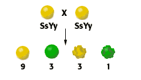

Dihybrid Cross
Problem 2: When does a phenotype ratio of 9:3:3:1 occur?
Tutorial to help answer the question
A phenotype ratio of 9:3:3:1 in the offspring of a mating of two organisms heterozygous for two traits is expected when:
A. the genes reside on the same chromosomeGenes on the same chromosome might be linked. If we assume linked genes, and that the heterozygotes are F1-hybrids from true breeding parents, the offspring would be predicted to occur in a 3:1 ratio of sperical, green- to dented, yellow-seeded plants.B. each gene contains two mutations
Without information on the relationship between mutation and phenotype, this choice can be eliminated.C. the gene pairs assort independently during meiosis
A phenotype ratio of 9:3:3:1 in the offspring means that all four possible combinations of the two different traits are obtained. The only way that new combinations of alleles can occur in the offspring that are absent in the heterozygous parents is if the alleles for different traits assort independently during gamete formation. As we will see in the tutorial for
Problem 3 , a 9:3:3:1 ratio is expected. D. only recessive traits are scored
If only recessive traits were scored, we would only consider offspring with one phenotype: dented, green seeds. A 9:3:3:1 ratio phenotypes would be impossible.E. none of the above


University of Arizona
Revised: October 30, 2003
Contact the Development Team
http://biology.arizona.edu
All contents copyright © 199620-03. All rights reserved.